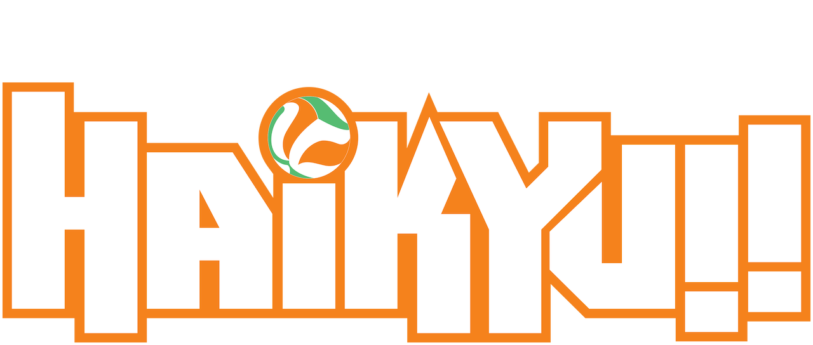
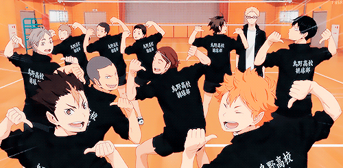

Top Times "Principais"
Início
Karasuno
Date Kogyo
Aoba Johsai
Shiratorizawa
Seja bem-vindo ao portfólio Haikyuu!
Vamos explorar os times com mais destaque da reião de Miyagi!
Sinta-se livre para navegar a vontade.
